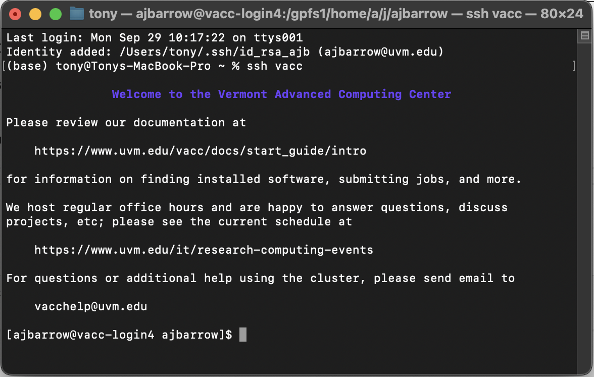
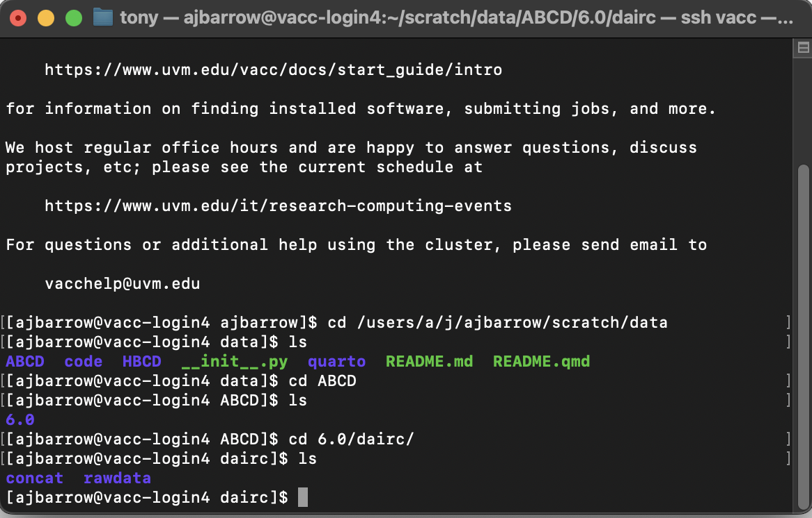
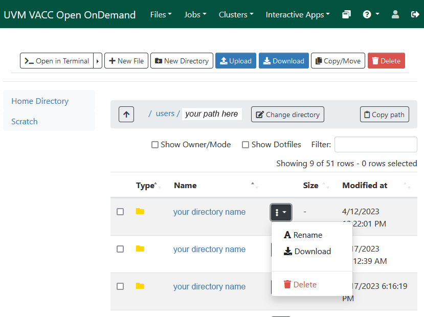

UVM-Hosted Data
Overview
Guiding philosophy: share data by sharing code to encourage best practices.
Goal: Agree on a flexible, convenient way to produce collaborative, shareable data science projects.
Things you will need
- an account with the Vermont Advanced Computing Center (VACC)
- one of the following operating systems:
- Linux (any distribution)
- macOS
- Windows Subsystem for Linux (WSL)
Accessing data stored on the VACC
- UVM’s high-performance computing (HPC) cluster
- “cluster” refers to multiple compute ‘nodes’ working in concert
- Accessible primarily though SSH
- but also through a GUI (Open OnDemand)
Once you have a VACC account, you’ll want to familiarize yourself with the documentation. This documentation incldues guides for
- Linux basics
- connecting to the VACC’s “login” nodes
- SLURM – the VACC’s job submission manager
- language-specific instructions
- much more…
I’m going to assume you’ve reviewed these guides and have successfully connected to a VACC login node using SSH. I have an SSH “alias” set up to make things easier:

You can now navigate to where our in-house data sets are maintained:
cd /users/a/j/ajbarrow/scratch/dataUsing basic Linux commands, we can explore the file directory:

Getting data into a your /data directory
I assume you are using a rigorous project structure including a /data directory and /data/raw and /data/processed subdirectories. See Starting a Project for more information.
Working directly on the VACC
If you plan to do your data cleaning, exploration, analysis, and reporting entirely on the VACC (more on this later), you can simply create a symbolic link between the /data directory in your project and the shared NERVE Lab data repository. A symbolic link is just like a Windows or macOS shortcut, but it’s created using the terminal:
ln -s /path/to/file /path/to/symlink
To be concrete (assuming your project is caled my_project):
cd my_project
ln -s /users/a/j/ajbarrow/scratch/data/ABCD data/rawThis will create a link between the repository that holds /ABCD and your project’s /data/raw folder. This means that you will access data from your local /data/raw/ folder – as will anyone who wants to reproduce your results!
Working on your local computer
If you don’t plan to work on the VACC directly (or if you will prototype your code on a local machine and possibly run analyses on the VACC later), you will need to copy data to your local machine 1. There are several methods for doing this. In any case, I strongly recommend that you maintain the original file structure.
rsync (recommended)
Linux and macOS have a built in tool called “remote sync” (rsync) which synchronizes file trees, often between “local” (e.g., your laptop) and “remote” (e.g., the VACC) resources. rsync commands take the form
rsync [option] source destination
I encourage you to become familiar with the various options used in rsync, but I will suggest a common implementation using teh -a (“archive”) flag which contains a number of common options (e.g., ensures all subdirectories are copied, preserves symlinks, and preserves ownership and permissions), the -v (“verbose”) flag that prints all errors and warnings, and the -P flag, which shows an interactive progress bar.
From my local machine:
cd my_project
rsync -avP \\
vacc:/users/a/j/ajbarrow/scratch/data/ABCD/6.0/dairc/rawdata/phenotype data/rawNote The \\ indicates a multi-line command. This is not necessary.
Other note You will likely have to replace vacc with your_netid@login.vacc.uvm.edu.
Open OnDemand (GUI-based alternative)
In order to use Open OnDemand, you need to be on campus or connected to UVM’s VPN.

Footnotes
Please do not interpret this section as a recommendation that you copy data from the VACC to your local machine.↩︎